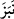
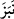

olunur. Çünkü böyle bir şeyin dili gereksiz şeylerle meşgul etmek dışında bir faydası
yoktur. Ona düşman olmak sadece lanetlemekle değil ancak ve ancak muhalefet etmekle
olur. Hadîs-i şerîfte şöyle buyrulur: “Başkalarının ayıplarıyla uğraşamayacak kadar
kendi ayıbıyla uğraşana ne mutlu!”[192] Âyette insanın ayıpsız olamayacağına da işaret
vardır. Sokrates’e sormuşlar: Ayıpsız insan var mıdır? O da şöyle cevap vermiş:
“Ayıpsız bir insan olsaydı ölmezdi.” Bunun için şâir demiştir ki:
Her hangi bir kardeşini dağınıklığından dolayı ayıplama;
Zira ondan önde değilsin; kim daha terbiyeli bilemezsin.
Yani başkalarını ayıplayıp kendisini farklı gören kimse terbiyeli değildir. Terbiyeli
bir kardeş ve temiz bir arkadaş arayan bulamaz. Bu yüzden ayıp ve kusurları örtmek
gerekir.
Sâib der ki:
Ayıp görücü gözümü görmekten men ettim, azlettim.
Dikene dolaşacak olsam, dikensiz gül görürüm.
Yine o şöyle der:
Ey Sâib! Eğer kendi ayıbını aramaktaysan
Başkalarının ayıbını arayanla ne işin olur?
( ) fiilinin aslı olan (
) fiilinin aslı olan ( ) kelimesi ‘lakap taktı’ anlamındaki (
) kelimesi ‘lakap taktı’ anlamındaki ( ) fiilinin
) fiilinin
masdarıdır. ( ) ifadesi ‘birbirlerine lakap taktılar,’ anlamındadır. () kelimesi
) ifadesi ‘birbirlerine lakap taktılar,’ anlamındadır. () kelimesi
güzel veya çirkin her türlü lakap için kullanılır. ( ) şeklindeki hadîs-i şerifte
) şeklindeki hadîs-i şerifte
geçen () kelimesi de ‘lakap taktı’ anlamındadır. Daha sonra bu kelime örfte ‘çirkin
lakap’ için kullanılmıştır. O da çağrılan kimsenin hoşuna gitmeyen şeydir. Lakap, kişiye
kendisinde var olan bir vasıftan dolayı isminden sonra verilen, medih veya zemme
delâlet eden lafızlardır. Buna göre âyetin mânâsı şudur: “Birbirinizi kötü lakaplarla
çağırmayın.” Muhaddislerin bazı râvîlerin tanınması için zorunlu olarak kullandıkları
Süleyman A’meş (Sulu zayıf göz), Vâsıl el-Ehdab (Kambur) gibi lakaplar bu kabilden
değildir; çünkü bunlarda hafife alma kasdedilmemektedir. Yine âyette Muhyiddin,
Bahâuddin gibi güzel lakaplar koymakta bir beis olmadığına da işaret vardır.
Âyette geçen ‘isim’ kelimesi lakap ve künyenin mukabili olmadığı gibi fiil ve harfin
de mukabili değildir. ‘Şöhret’ anlamındadır. Çünkü isim yükseklik anlamındaki ()
kökünden gelir.
( ) yani ‘insanlar arasında kerem ve cömertlikle ya da
) yani ‘insanlar arasında kerem ve cömertlikle ya da
denâetle ve yerme ile anılır oldu’, mânâsını kastederler. Âyetteki () kelimesi irab